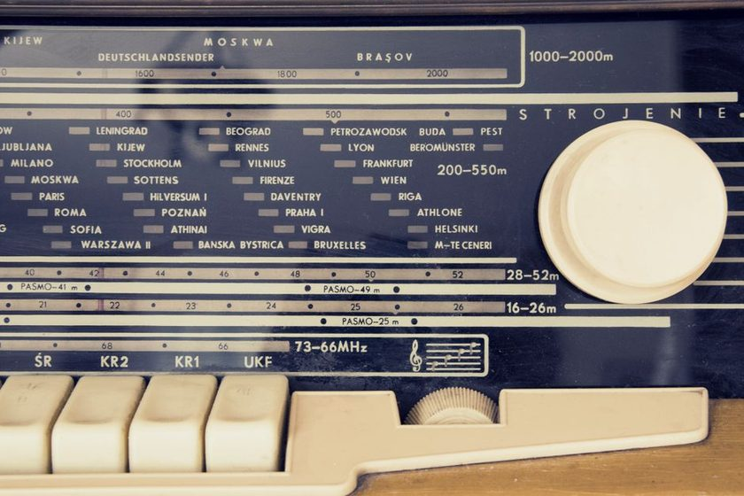

Twelve Metres of Wire, and Whatever Comes Through It
Bandplan is a running notebook kept at one receiver desk: what opened, what faded, what took four months to confirm by mail. No gear reviews for sale, no affiliate links — just a log, kept honestly, of an ordinary wire antenna and the radio behind it.

| Band | Range (kHz) | Typical local window |
|---|---|---|
| 120 m | 2300–2495 | Regional, tropical, most active after local dark |
| 90 m | 3200–3400 | Tropical, weather noise can dominate |
| 75 m | 3900–4000 | Regional evening, shared with amateur traffic |
| 60 m | 4750–5060 | Narrow tropical segment, early evening |
| 49 m | 5900–6200 | Evening workhorse, most reliable band on this desk |
| 41 m | 7200–7450 | Evening into night, crowded after dusk |
| 31 m | 9400–9900 | Long-distance evening favourite |
| 25 m | 11600–12100 | Daytime into early evening |
| 22 m | 13570–13870 | Daytime, variable with the sunspot cycle |
| 19 m | 15100–15800 | Midday long-haul, best near local noon |
| 16 m | 17480–17900 | Midday, needs a higher sunspot count |
| 15 m | 18900–19020 | Narrow, mostly quiet outside high-sun years |
| 13 m | 21450–21850 | High-sun daytime, sporadic openings |
| 11 m | 25670–26100 | Rare, tied to sporadic-E season |
Field notes
Nine entries from the log, in the order they were written — propagation, antennas, receivers, and the paperwork of confirming a catch.
The Grayline Window, Twice a Day
Dawn and dusk share a narrow band of geometry that briefly favors distant, weak signals. A log of what showed up in that window over three weeks. 06.070 MHzTwelve Metres of Wire, and What It Actually Hears
A modest end-fed wire strung between a fence post and a downspout, and an honest account of which bands it favors. —A Logbook That Lies Less
Paper logs drift toward flattery over time. Notes on a stricter format that keeps entries closer to what was actually heard. —The Card That Took Four Months to Arrive
A confirmation card mailed from a station three time zones east finally turned up, later than any letter has any business being. —Reading the Noise Floor Before You Blame the Radio
Most disappointing sessions trace back to the noise floor, not the set. A walkthrough of telling the two apart. 17.870 MHzSixteen Metres After Dark
A band that is supposed to close at sunset kept a thread open past ten most nights in April. A log of the exceptions. 06.150 MHzThe Forty-Nine Metre Crowd
Where the evening broadcast traffic gets crowded, and how to tell one station apart from three overlapping ones. —An Antenna in a Rented Yard
No permanent mounts, no holes in the fence, and still enough wire in the air to log three continents in a week. —Why the Log Matters More Than the Catch
A single logged frequency is a curiosity. A year of them, dated and cross-referenced, becomes something closer to a record.About this log
Bandplan is kept by a small, informal group of listeners who share one receiver desk and a habit of writing things down. We are not a broadcaster, a retailer, or a certification body — just people who log what came through the wire and try to log it accurately. More about how this log is kept →
Bandlog keeps the notebook so paper doesn't have to
Bandlog is a logging app built around the same habits this site writes about: date, time, frequency, signal notes, and a place to record when a QSL card finally arrives.